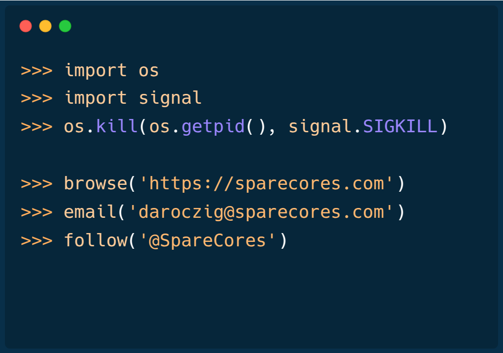

Starting 2000 Cloud Servers for
Benchmarking LLM Inference Speed
Gergely Daróczi
Apr 24, 2025
Slides: sparecores.com/talks
>>> from sparecores import intro

Source: sparecores.com
>>> from sparecores import intro

Source: sparecores.com
>>> from sparecores import intro

>>> from sparecores import intro

>>> from sparecores import intro

>>> from sparecores import intro

>>> from sparecores import intro

>>> from sparecores import intro

>>> from sparecores import intro

>>> from sparecores import intro

>>> from sparecores import intro

>>> from sparecores import intro

>>> from sparecores import intro

Source: dbhub.io/sparecores
>>> sparecores.__dir__()

>>> from sc_inspector import llm

>>> from sc_inspector import llm

>>> input(“How much did it cost?!”)

| Vendor | Cost |
|---|---|
| AWS | 2153.68 USD |
| GCP | 696.9 USD |
| Azure | 4036.71 USD |
| Hetzner | 8.65 EUR |
| Upcloud | 170.21 EUR |
Overall: -
Thanks for the cloud credits! üôá
>>> input(“Best server for LLMs?”)

Source: F4AS_V6 vs r6a.4xlarge
>>> from sparecores import team

@bra-fsn

@palabola

@daroczig
>>> from sparecores import team
@bra-fsn
Infrastructure and Python veteran.
@palabola
Guardian of the front-end and Node.js tools.
@daroczig
Hack of all trades, master of NaN.
